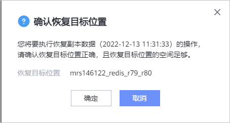

当需要对已备份的Redis集群进行恢复时，可以参考本节恢复Redis集群至原位置或新位置。
背景信息
支持使用备份副本、复制副本、导入的副本进行恢复。支持恢复至原位置或新位置。
前提条件
- 恢复前请确保恢复目标位置的数据目录剩余空间大于恢复副本缩减前大小，否则恢复将失败。
- 执行Redis恢复前，需要在MRS控制台停止Redis集群所有实例。
操作步骤
- 选择“数据利用 > 副本数据 > 大数据 > Redis”。
- 您可以以Redis资源维度或以副本维度查找副本，本节以资源维度为例进行说明。
在“资源”页签，根据资源名称查找到需要恢复的集群，并单击资源名称。
- 依次选择年、月、天找到副本。
当时间上显示
 ，即表示该月、该天存在副本。
，即表示该月、该天存在副本。 - 指定副本进行恢复。
- 单击需要恢复的副本所在行的。
- 恢复Redis集群至原位置或新位置。
相关参数说明如表1。
- 单击“确定”。
- 系统弹出如下提示，确认提示内容后，单击“确定”。
